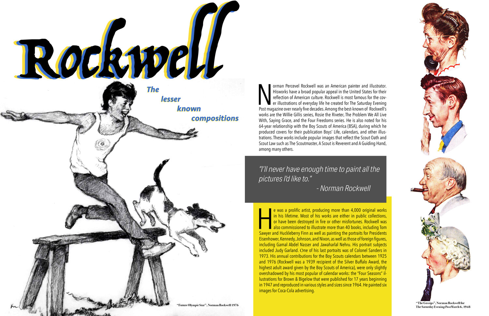
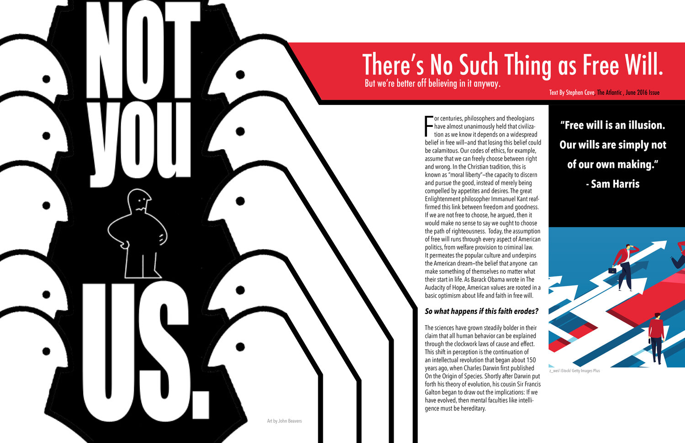
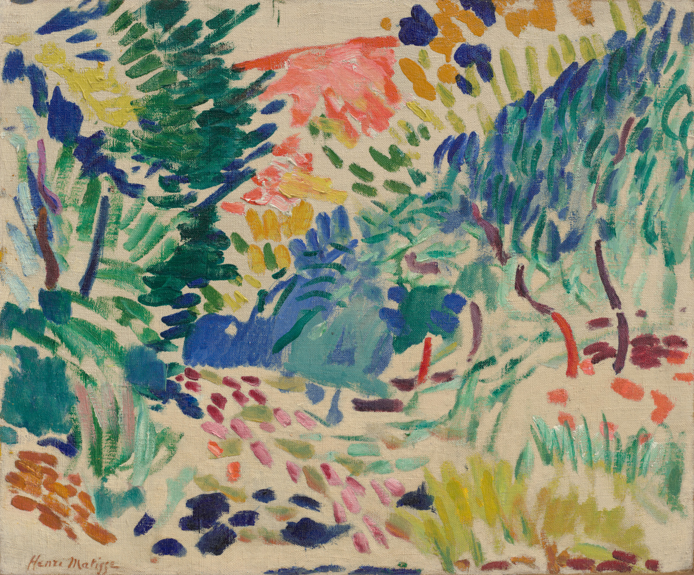
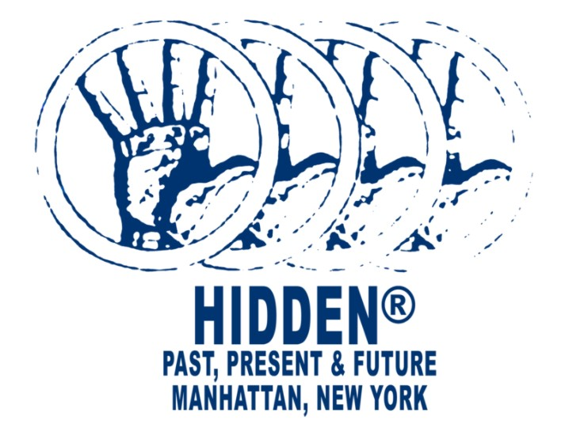
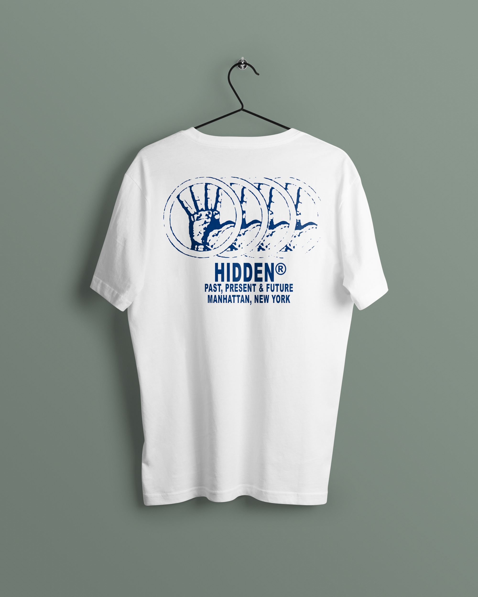
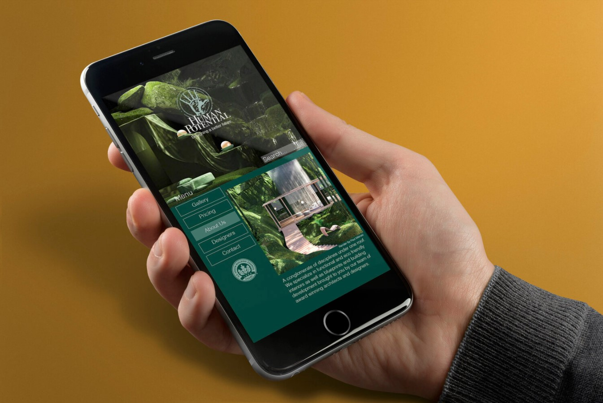

Orchard
 |
The Orchard is an ongoing business identity project that I created for my father for a Hard Cidery and Orchard that he is establishing in upstate New York. |
 |
Incorporating elements of nature to emit an aura of airiness, simplicity and zen. |
Magazine Spreads and Book Covers
 |
A personal take on a Sci-Fi Fantasy classic, the Foundation novels by Isaac Aasimov, using mixed media, pen and ink, as well as digital means to bring this book cover to life. |
|  | Magazine spreads created for Indesign course |
|  | The layouts are shwon as a two-page magazine spread that could be found in a major publication. |
Individual Work and Commissions
|  | |
|  | My submission for the HIDDEN NYC design contest. |
|  | |
|  | Business identity mockup for a fictitious architecture firm. |